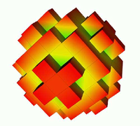
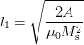
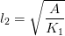

11. Mini tutorial micromagnetic modelling¶
This section is intended for researchers who are just beginning to explore micromagnetic modelling. It is assumed that you have some knowledge on micromagnetics. We advise to read this whole section, and then to look the Guided Tour examples (or to explore other Micromagnetic packages at that point).
11.1. Introduction micromagnetic modelling¶
To carry out micromagnetic simulations, a set of partial differential equations have to be solved repeatedly. In order to be able to do this, the simulated geometry has to be spatially discretised. The two methods that are most widely spread in micromagnetic modelling are the so-called finite difference (FD) method and the finite element (FE) method. With either the FD or the FE method, we need to integrate the Landau-Lifshitz and Gilbert equation numerically over time (this is a coupled set of ordinary differential equations). All these calculations are carried out by the Micromagnetic packages and the user does not have to worry about these.
The finite difference method subdivides space into many small cuboids. Sometimes the name cell is used to describe one of these cuboids. (Warning: in finite difference simulations, the simulated geometry is typically enclosed by a (big) cuboid which is also referred to as simulation cell. Usually (!) it is clear from the context which is meant.) Typically, all simulation cells in one finite difference simulation have the same geometry. A typical size for such a cell could be a cube of dimensions 3nm by 3nm by 3nm.
Let’s assume we would like to simulate a sphere. The following picture
shows an approximation of the shape of the sphere by cubes. This is the finite difference approach. For clarity, we have chosen rather large cubes to resolve the sphere – in an actual simulation one would typically use a much smaller cell size in order to resolve geometry better.
On the other hand, the finite element method (typically) subdivides space into many small tetrahedra. The tetrahedra are sometimes referred to as the (finite element) mesh elements. Typically, the geometry of these tetrahedra does vary throughout the simulated region. This allows to combine the tetrahedra to approximate complicated geometries.
Using tetrahedra, the a discretised sphere looks like this:

The spherical shape is approximated better than with the finite differences.
The first step in setting up a micromagnetic simulation is to describe the geometry. In the case of finite difference calculations, it will depend on the package you use (currently there is only OOMMF freely available) how to tell the package what geometry you would like to use, and how small your simulation cells should be.
In the case of finite element calculations, you need to create a finite element mesh (see Finite element mesh generation).
11.2. What is better: finite differences or finite elements?¶
This depends on what you want to simulate. Here are some points to consider.
Finite difference simulations are best when the geometry you simulate is of rectangular shape (i.e. a cube, a beam, a geometry composed of such objects, a T profile, etc). In these situations, the finite element discretisation of the geometry will not yield any advantage. (Assuming that the finite difference grid is aligned with the edges in the geometry.)
Finite difference simulations need generally less computer memory (RAM). This is in particular the case if you simulate geometries with a big surface (such as thin films). See Memory requirements of boundary element matrix for a description of the memory requirements of the hybrid finite element/boundary element simulations (both Nmag and Magpar are in this category).
If this turns out to be a problem for you, we suggest to read the section Compression of the Boundary Element Matrix using HLib.
Finite element simulations are best suited to describe geometries with some amount of curvature, or angles other than 90 degrees. For such simulations, there is an error associated with the staircase discretisation that finite difference approaches have to use. This error is very much reduced when using finite elements.
(We state for completeness that there are techniques to reduce the staircase effect in finite difference simulations but these are currently not available in open source micromagnetic simulation code.)
For finite element simulations, the user has to create a finite element mesh. This requires some practice (mostly to get used to a meshing package), and in practice will take a significant amount of the time required to set up a finite element simulation.
11.3. What size of the cells (FD) and tetrahedra (FE) should I choose?¶
There are several things to consider:
- the smaller the cells or tetrahedra, the more accurate the simulation results.
- the smaller the cells or tetrahedra, the more cells and tetrahedra are required to describe a geometry. Memory requirements and execution time increase with the number of cells and tetrahedra. In practice this will limit the size of the system that can be simulated.
the discretisation length (this is the edge length of the cells or the tetrahedra) should be much smaller than the exchange length. The reason for this is that in the derivation of the micromagnetic (Brown’s) equations, one assumes that the magnetisation changes little in space (there is a Taylor expansion for the exchange interaction). Therefore, we need to choose a discretisation length so that the direction of the magnetisation vectors varies little from one site (cell center in FD, node of tetrahedron in FE) to the next. The difference of the magnetisation vector is sometimes referred to as the ‘spin angle’: a spin angle of 0 degrees, means that the magnetisation at neighbouring sites points in the same direction, whereas a spin angle of 180 degrees would mean that they point in exactly opposite directions.
How much variation is acceptable, i.e. how big is the spin angle allowed to be? It depends on the accuracy required. Some general guidelines from M. Donahue [in email to H. Fangohr on 26 March 2002 referring to OOMMF] which we fully endorse :
[Begin quote M. Donahue]
- if the spin angle is approaching 180 degrees, then the results are completely bogus.
- over 90 degrees the results are highly questionable.
- Under 30 degrees the results are probably reliable.
[end quote]
It is absolutely vital that the spin angle does not become excessive if the simulation results are to be trusted. (It is probably the most common error in micromagnetics: one would like to simulate a large geometry, thus one has to choose the discretisation length large to get any results within reasonable time. However, the results are often completely useless if the spin angle becomes too large).
Because this is such an important issue, OOMMF – for example – provides Max Spin Ang data in its odt data table file (for the current configuration, the last stage, and the overall run). Nmag has a columns maxangle_m_X in the Data files (.ndt) file that provide this information (where X is the name of the magnetic material).
You will probably find that often a discretisation length of half the Exchange length or even about the Exchange length is chosen. If the spin angle stays sufficiently low during the whole simulation (including intermediate non-equilibrium configurations), then this may be acceptable.
The ultimate test (recommended by – among others – M. Donahue and the nmag team) is the following:
cell size dependence test
The best way to check whether the cell size has been chosen small enough, is to perform a series of simulations with increasing cell size. Suppose we are simulating Permalloy (Ni80Fe20 with Ms=8e5 A/m, A=1.3e-11) and the Exchange length l1 is about 5nm. Suppose further we would like to use a cell size of 5nm for our simulations.
We should then carry out the same simulation with smaller cell sizes, for example, 4nm, 3nm, 2nm, 1nm. Now we need to study (typically plot) some (scalar) entity of the simulation (such as the coercive field, or the remanence magnetisation) as a function of the cell size.
Ideally, this entity should converge towards a constant value when we reduce the simulation cell size below a critical cell size. This critical cell size is the maximum cell size that should be used to carry out the simulations.
Be aware that (i) it is often nearly impossible to carry out these simulations at smaller cell sizes [because of a lack of computational power] and (ii) this method is not 100% fool proof [the observed entity may appear to converge towards a constant but actually start changing again if the cell size is reduced even further].
One should therefore treat the suggestions made above as advise on good practice, but never solely rely on this. Critical examination of the validity of simulation results is a fundamental part of any simulation work.
In summary, it is vital to keep the maximum spin angle small to obtain accurate results. One should always (!) check the value of the spin angle in the data files. One should also carry out a series of simulations where the spin angle is reduced from one simulation to the next while keeping all other parameters and the geometry the same. This should reveal any changes in the results that depend on the discretisation length.
11.3.1. Exchange length¶
There is sometimes confusion about what equation should be used to compute the exchange length. In this document, we refer to this equation for soft materials (where the demagnetisation energy is driving domain wall formation)

and this equation for hard materials (with uniaxial pinning) where the crystal anisotropy governs domain wall lengths

If in doubt which of the two equations is the right one, compute both l1 and l2 and choose the minimum length as the relevant exchange length for this system.
11.3.2. Further reading¶
Micheal Donahue and co-workers have published a couple of papers on the effect of cell size on vortex mobility:
and one which included a section on discretisation-induced Neel wall collapse
11.4. Micromagnetic packages¶
The following micromagnetic simulation packages are freely available on the internet:
These are general purpose packages. Some other (and partly closed source/commercial packages) are listed at http://math.nist.gov/oommf/otherlinks.html.
11.5. Summary¶
The most important points in short:
- choose a small discretisation length so that the spin angle stays well below 30 degrees.
- if you want to simulate thin films (or other geometries with a lot of surface [nodes]), with finite elements, consider how much memory you would need for the boundary element matrix (best to do this before you start creating the mesh).